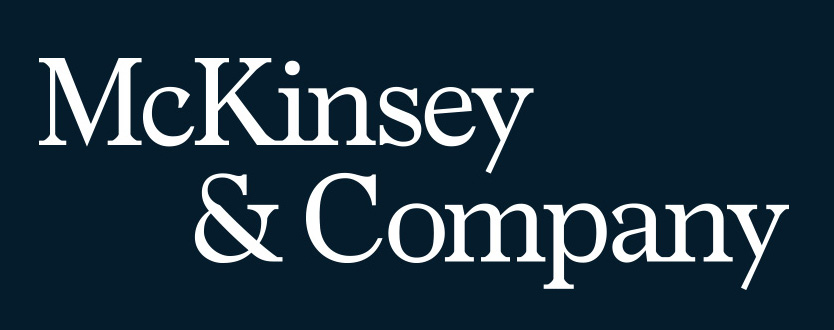

"Lutando por mais diversidade e mais resultados no mundo corporativo!"


Sou o Guilherme Matheus, estou desenvolvendo minhas habilidades técnicas comportamentais para me tornar um desenvolvedor java full stack, graças ao curso da Generation Brasil. Com essas habilidades, pretendo aplica-las para além da futura carreira profissional, em áreas como física e neurociência(estudo por interesses próprio).

Aos 12 anos ganhei meu primeiro computador Windows Vista, ali aconteceu amor a primeira vista! Desde então lia livros de HTML, CSS e Javascript, comecei a fazer pequenas páginas, jogos com meus amigos e a participar de Olimpíadas de programação. O Sonho da minha vida é ser Pai, ou seja, casar e constituir uma família bem sucedida. Para isso preciso me preparar, por isso meu foco atual é conquistar uma vaga como Dev Júnior Fullstack, e crescer o máximo que eu possa. Eu não sei tudo, porém darei o meu melhor para agregar valor ao seu time. Eu acredito muito na frase: “O Sucesso acontece quando a preparação encontra uma oportunidade”, eu tenho me preparado a vida inteira para isso, agora, você poderia me ajudar com uma oportunidade?

Sou o Aleff, tenho 26 anos e estou me tornando um Desenvolvedor Java FullStack Jr. Desde criança eu sempre fui apaixonado por tecnologia e muito curioso também, foi dai que eu percebi que poderia usar esse conhecimento pra ajudar a vida das pessoas ao meu redor e desde então sigo essa jornada incessante.

Sou Lucas Marzocca, tenho 22 anos e tenho certificado em Administração e Tecnologia. A tecnologia sempre foi presente em minha vida, principalmente na área de games como redator e streamer, mas sempre levei como um hobby, até a pandemia, onde decidi estudar a me tornar Desenvolvedor Full Stack.

Sou o Renan, tenho 24 anos, sou formado no curso técnico de informática e atualmente graduando no curso de Analise e Desenvolvimento de Sistemas. Sou apaixonado por tecnologia desde a infância, graças aos games, por isso, resolvi me especializar nessa área para gerar experiências extraordinárias e facilitar a vida das pessoas.
Inspirado na ODS 16 da ONU, decidimos focar em como tornar as instituições mais eficazes? Através de várias pesquisas e dados, descobrimos que existe uma relação significativa entre diversidade e eficiência nas empresas.

"Um estudo da consultoria McKinsey revela que há uma conexão significativa entre diversidade e performance financeira das empresas. Depois de avaliar 366 companhias, nos Estados Unidos, na Inglaterra e em países da América Latina, a conclusão é que aquelas que possuem o maior número de profissionais considerados diversos dentro do quadro geral de funcionários são capazes de entregar desempenho até 35% superior à média da indústria como um todo."
Link do Artigo
Concluímos que a solução é conectar esses profissionais diversos e qualificados que não tem oportunidade aos empregadores que buscam talentos e um maior desempenho para suas empresas!